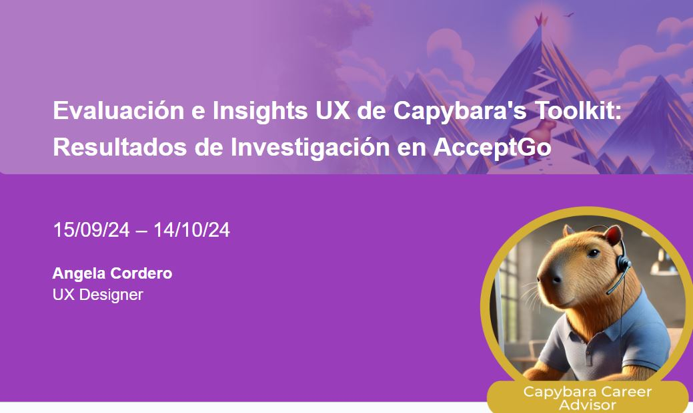

Bienvenido a mi portafolio, soy Angela Cordero
Experiencia Laboral
¿Desea implementar un proyecto similar a su empresa?
-
APPLIKATE - 11/2024 - 12/2024
Prototipé la interfaz de APPLIKATE en Figma, implementando un diseño escalable para permitir la edición futura, optimizando la flexibilidad del producto. -
AcceptGo - 10/2024 - 11/2024
Detecté más de 20 insights estratégicos para optimizar la plataforma 'Capybara's Toolkit', analizando datos de usuarios mediante entrevistas semiestructuradas y pruebas de usabilidad con Dovetail, mejorando la experiencia del cliente en un 37,14 %
